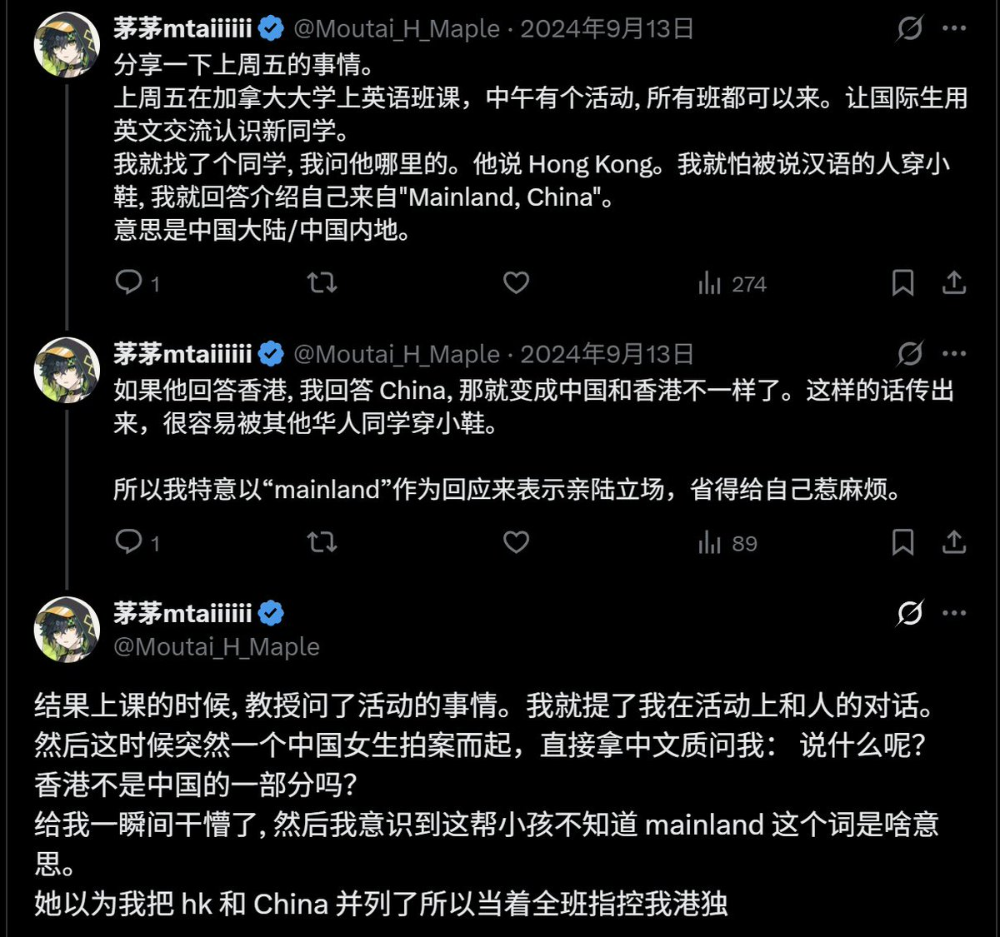
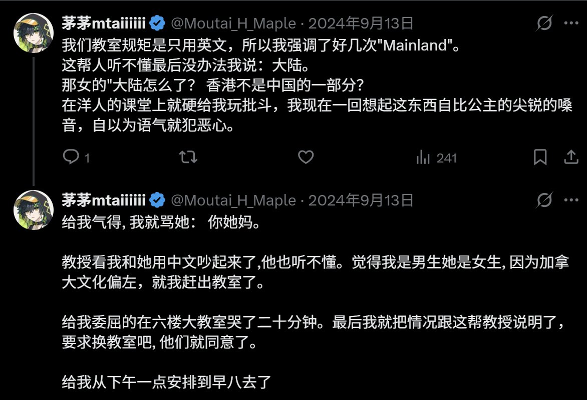

asuka 🏳️⚧️🍥🏳️🌈🏴
@H4lf_L13_F8964
@Moutai_H_Maple 老生常谈的关于身份政治究竟是身份还是政治，以及实践上的狗哨带来的有罪推定和预防性治理，但是看到现实案例还是令人恐慌。国内的部分酷儿团体也是一样的偏见相当于暗中强调被指派性别的原罪。右人打着左人旗去重塑社会和抹黑，再引来了反弹，快别逗(torturing)我了。


茅茅taiiiiii
@Moutai_H_Maple
顺便说一句，如果你们男同性恋者要移民。
你们在加拿大的地位，在白人心目中，远不如一个顺直女小粉红富二代。 https://t.co/8B9mgy58Xg